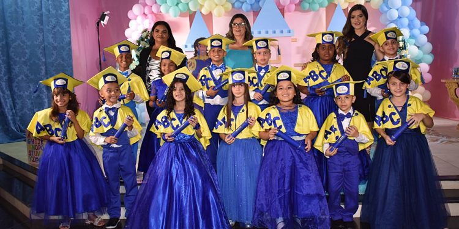

Emoção e Celebração: Formatura do ABC do Colégio Mérito é marcada por momentos inesquecíveis
Postado por Gabriel Nascimento, em 4 de dezembro de 2023
No último sábado (01/12), o Sindicato dos Professores de Paulistana foi o cenário mágico para a formatura do ABC do Colégio Mérito, um evento que transcendeu as expectativas e se tornou uma lembrança eterna para os pequenos formandos.
A noite foi preenchida com risos, aplausos e alegria, à medida que os formandos do ABC, vestidos com suas becas caprichosas, marcavam o fim de uma fase significativa de suas vidas escolares. A cerimônia, repleta de momentos emocionantes, não apenas celebrou
a conquista acadêmica, mas também ressaltou os laços formados entre educadores, alunos e suas famílias.
Para mais detalhes, visite o site
FnNotícias
Comentários
Não há comentários.